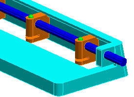
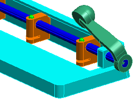
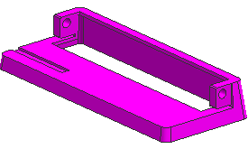
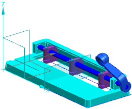
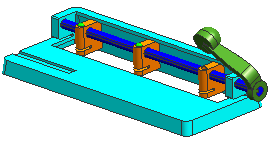

更改装配显示
您将使用装配导航器来查看装配结构。
-
在装配导航器中，右击 des02_hp_lever_mm 节点并选择隐藏。
在装配导航器中，一个灰色的复选标记
 显示在隐藏组件旁边。
显示在隐藏组件旁边。des02_hp_lever_mm 组件从图形窗口中消失。

-
选中 des02_hp_lever_mm 的复选框。
组件在装配中显示，一个红色复选标记
 显示在装配导航器中。
显示在装配导航器中。
-
右击 des02_hp_frame_mm 节点并选择设为显示部件。

-
选择首选项→装配，确保保持复选框被选中，然后点击确定。
-
右击 des02_hp_frame_mm 节点并选择显示父项→des02_hole_punch_assm_mm。
用户默认设置和保持装配首选项确保组件将继续成为工作部件，而装配成为显示部件。

-
双击 des02_hole_punch_assm_mm 节点以将它设为工作部件。
